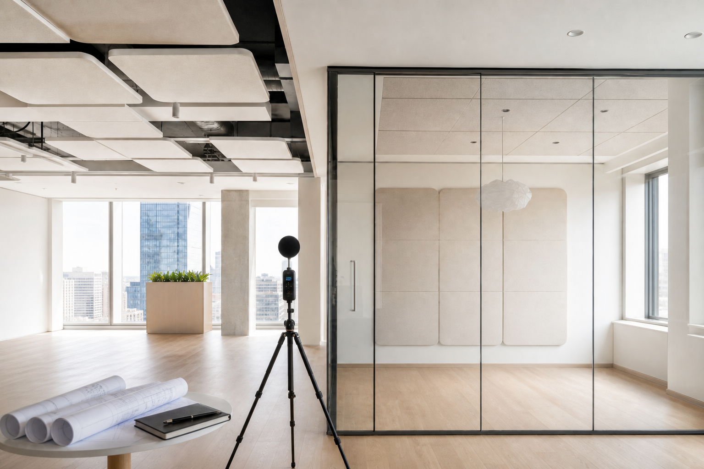

Замер и проект: в чём разница
«Сделайте замер и скажите, сколько децибел будет после ремонта» — такой запрос слышим часто. Замер фиксирует, что происходит сейчас. Проект описывает, что строить и как проверить результат. От диагностики ждут чертежей и прогноза в дБ — её там нет.

Замер: что происходит сейчас
Выезд, согласованные измерения, заключение. Смотрим, откуда шум, какие пути доминируют, есть ли фланкирование через шахты, щели, общие узлы. На выходе — карта проблемы и приоритеты: что усилить первым, что можно отложить, где капитальный ремонт, где локальное решение.
Замер отвечает на «что слышно и откуда». Без детальных чертежей узлов, без спецификации и без обещания «минус 15 дБ». Результат на объекте зависит от монтажа и того, как бригада выполнит узлы. Rw на паспорте материала — образец в лаборатории, не ваша спальня.
Проект: что строить
Проектирование — обследование плюс схемы конструкций, узлы примыканий, спецификация, требования к монтажу. Прогноз появляется, но с условиями: узлы соблюдены, новых дыр нет, есть контрольный замер после. Вопрос проекта — «что строить и как убедиться, что получилось».
Для подрядчика это рабочая документация. «Сделайте потолще» превращается в слои, толщины, крепления, герметизацию. Для заказчика — критерии приёмки заранее. Особенно полезно при ремонте квартиры, когда бригада работает без вас на объекте.
Ситуация
Заказчик хочет «только замер, а проект сделает подрядчик по рекомендациям».
Что проверяет ЦИА
Возможно, если бригада умеет акустические узлы. Риск — разная трактовка фраз вроде «герметизировать периметр». Полный проект снижает споры и переделки.
Когда хватает замера
Локальная задача и ограниченный бюджет — понять, стоит ли вообще вкладываться. Купили квартиру, слышите соседей, хотите оценить масштаб до сметы. Несколько комнат — куда силы первыми.
Ещё раньше — дистанционная оценка: план, фото, описание, взгляд без выезда. Замер на объекте не заменяет, но помогает решить, нужен ли выезд и в каком формате.
Когда нужен проект
Капитальный ремонт с несколькими путями: стена, потолок, проходки. Требования, которые надо зафиксировать для подрядчика. Передача работы бригаде без двусмысленностей. Кинотеатр, студия — почти всегда спецпроект, не «замер с советами». Звукоизоляцию на этапе ремонта лучше проектировать до черновой.
Про деньги
Замер дешевле — объём меньше. Сэкономили на проекте при ремонте на миллионы — часто переделка: не тот слой, пропущенная герметизация, розетка на общей стене. Один демонтаж ГКЛ съедает «экономию» многократно. Замер — диагностика. Проект — строительство.
Спор с подрядчиком и «до/после»
Проект с критериями приёмки и контрольным замером — документ для разговора с бригадой. Замер сам по себе не говорит «смонтируйте вот так» — он говорит «вот что слышно, вот приоритеты». Если спор уже идёт, проект весомее устных рекомендаций. Контрольный замер после монтажа сравнивает «до» и «после» в вашей квартире, не на лабораторном образце.
Как выбрать
Ремонт не ближайшие годы — замер или оценка дадут понимание, стоит ли оставаться и какие варианты есть. Ремонт через месяц — без проекта легко заказать не те работы. Бригада уже на объекте — хотя бы замер до закрытия конструкций. Неясность с шумом от соседей — повод начать с диагностики, не с покупки материалов на маркетплейсе.
Что на руках после
После замера — заключение: карта путей, приоритеты, формат дальнейших работ. Чертежей узлов и спецификации на закупку там нет — это ограничение формата. После проекта — схемы, узлы примыканий, требования к монтажу, иногда контрольные точки. Как герметизировать периметр потолка — в узле, а не «сделайте аккуратно».
Без технического бэкграунда проект ещё и переводит разговор с бригадой: не «сделайте потише», а «смонтируйте по листу 3, проверьте зазор, фото до закрытия». Так реже появляются акустические мостики из-за «сделали как обычно».
Частые вопросы
Оставить заявку
Опишите помещение и задачу — подскажем формат работы ЦИА. Если вы прошли Проблемомер, поля заполнятся автоматически.
Задача отправлена